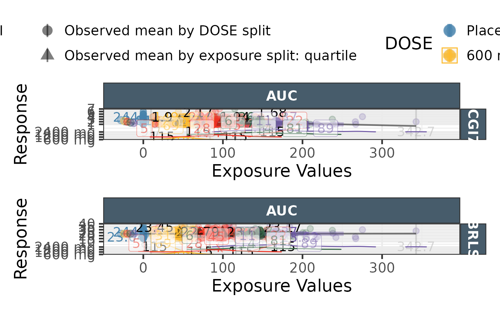
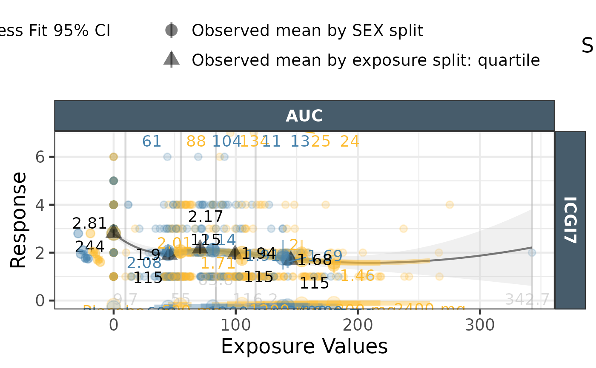

Produces a logistic fit plot with a facettable exposures/quantiles/distributions in ggplot2
Usage
ggcontinuousexpdist(
data = effICGI,
response = "response",
endpoint = "Endpoint",
DOSE = "DOSE",
color_fill = "DOSE",
exposure_metrics = c("AUC", "CMAX"),
exposure_metric_split = c("median", "tertile", "quartile", "none"),
exposure_metric_soc_value = -99,
exposure_metric_plac_value = 0,
exposure_distribution = c("distributions", "lineranges", "none"),
dose_plac_value = "Placebo",
xlab = "Exposure Values",
ylab = "Response",
mean_obs_byexptile = TRUE,
mean_text_size = 5,
mean_obs_bydose = TRUE,
mean_obs_bydose_plac = FALSE,
N_text_size = 5,
binlimits_text_size = 5,
binlimits_ypos = -Inf,
binlimits_color = "gray70",
dist_position_scaler = 0.2,
dist_offset = 0,
dist_scale = 0.9,
lineranges_ypos = -1,
lineranges_dodge = 1,
lineranges_doselabel = FALSE,
proj_bydose = TRUE,
yproj = TRUE,
yproj_xpos = 0,
yproj_dodge = 0.2,
yaxis_position = c("left", "right"),
facet_formula = NULL,
theme_certara = TRUE,
return_list = FALSE
)Arguments
- data
Data to use with multiple endpoints stacked into response (values), Endpoint(endpoint name)
- response
name of the column holding the response values
- endpoint
name of the column holding the name/key of the endpoint default to
Endpoint- DOSE
name of the column holding the DOSE values default to
DOSE- color_fill
name of the column to be used for color/fill default to DOSE column
- exposure_metrics
name(s) of the column(s) to be stacked into
expnameexptileand split intoexposure_metric_split- exposure_metric_split
one of "median", "tertile", "quartile", "none"
- exposure_metric_soc_value
special exposure code for standard of care default -99
- exposure_metric_plac_value
special exposure code for placebo default 0
- exposure_distribution
one of distributions, lineranges or none
- dose_plac_value
string identifying placebo in DOSE column
- xlab
text to be used as x axis label
- ylab
text to be used as y axis label
- mean_obs_byexptile
observed probability by exptile
TRUE/FALSE- mean_text_size
mean text size default to 5
- mean_obs_bydose
observed mean by dose
TRUE/FALSE- mean_obs_bydose_plac
observed probability by placebo dose
TRUE/FALSE- N_text_size
N by exposure bin text size default to 5
- binlimits_text_size
5 binlimits text size
- binlimits_ypos
binlimits y position default to 0
- binlimits_color
binlimits text color default to "gray70"
- dist_position_scaler
space occupied by the distribution default to 0.2
- dist_offset
offset where the distribution position starts default to 0
- dist_scale
scaling parameter for ggridges default to 0.9
- lineranges_ypos
where to put the lineranges -1
- lineranges_dodge
lineranges vertical dodge value 1
- lineranges_doselabel
TRUE/FALSE- proj_bydose
project the probabilities on logistic curve
TRUE/FALSE- yproj
project the probabilities on y axis
TRUE/FALSE- yproj_xpos
y projection x position 0
- yproj_dodge
y projection dodge value 0.2
- yaxis_position
where to put y axis "left" or "right"
- facet_formula
facet formula to be use otherwise
endpoint ~ expname- theme_certara
apply certara colors and format for strips and default colour/fill
- return_list
What to return if True a list of the datasets and plot is returned instead of only the plot
Examples
# Example 1
library(ggplot2)
library(patchwork)
effICGI <- logistic_data |>
dplyr::filter(!is.na(ICGI7))|>
dplyr::filter(!is.na(AUC))
effICGI$DOSE <- factor(effICGI$DOSE,
levels=c("0", "600", "1200","1800","2400"),
labels=c("Placebo", "600 mg", "1200 mg","1800 mg","2400 mg"))
effICGI$STUDY <- factor(effICGI$STUDY)
effICGI <- tidyr::gather(effICGI,Endpoint,response,ICGI7,BRLS)
a <- ggcontinuousexpdist(data = effICGI |> dplyr::filter(Endpoint =="ICGI7"),
response = "response",
endpoint = "Endpoint",
exposure_metrics = c("AUC"),
exposure_metric_split = c("quartile"),
exposure_metric_soc_value = -99,
exposure_metric_plac_value = 0,
dist_position_scaler = 1, dist_offset = -1 ,
yproj_xpos = -20 ,
yproj_dodge = 20 ,
exposure_distribution ="distributions")
#> Joining with `by = join_by(loopvariable, DOSE, quant_10)`
#> Joining with `by = join_by(loopvariable, DOSE, quant_90)`
#> Joining with `by = join_by(loopvariable, DOSE, quant_25)`
#> Joining with `by = join_by(loopvariable, DOSE, quant_75)`
#> Joining with `by = join_by(loopvariable, DOSE, medexp)`
b <- ggcontinuousexpdist(data = effICGI |> dplyr::filter(Endpoint =="BRLS"),
response = "response",
endpoint = "Endpoint",
exposure_metrics = c("AUC"),
exposure_metric_split = c("quartile"),
exposure_metric_soc_value = -99,
exposure_metric_plac_value = 0,
dist_position_scaler = 4.2, dist_offset = 5 ,
yproj_xpos = -20 ,
yproj_dodge = 20 ,
exposure_distribution ="distributions",
return_list = FALSE)
#> Joining with `by = join_by(loopvariable, DOSE, quant_10)`
#> Joining with `by = join_by(loopvariable, DOSE, quant_90)`
#> Joining with `by = join_by(loopvariable, DOSE, quant_25)`
#> Joining with `by = join_by(loopvariable, DOSE, quant_75)`
#> Joining with `by = join_by(loopvariable, DOSE, medexp)`
(a / b) +
plot_layout(guides = "collect") &
theme(legend.position = "top")
#> `geom_smooth()` using formula = 'y ~ x'
#> `geom_smooth()` using formula = 'y ~ x'
#> Picking joint bandwidth of 11.7
#> Warning: Removed 244 rows containing non-finite outside the scale range
#> (`stat_density_ridges()`).
#> Warning: Removed 1 row containing missing values or values outside the scale range
#> (`geom_pointrange()`).
#> Warning: Removed 1 row containing missing values or values outside the scale range
#> (`geom_text()`).
#> `geom_smooth()` using formula = 'y ~ x'
#> Warning: Removed 4 rows containing non-finite outside the scale range (`stat_smooth()`).
#> `geom_smooth()` using formula = 'y ~ x'
#> Warning: Removed 4 rows containing non-finite outside the scale range (`stat_smooth()`).
#> Picking joint bandwidth of 11.7
#> Warning: Removed 244 rows containing non-finite outside the scale range
#> (`stat_density_ridges()`).
#> Warning: Removed 4 rows containing missing values or values outside the scale range
#> (`geom_point()`).
#> Warning: Removed 1 row containing missing values or values outside the scale range
#> (`geom_pointrange()`).
#> Warning: Removed 1 row containing missing values or values outside the scale range
#> (`geom_text()`).

#Example 2
effICGI$SEX <- as.factor(effICGI$SEX)
ggcontinuousexpdist(data = effICGI |>
dplyr::filter(Endpoint =="ICGI7"),
response = "response",
endpoint = "Endpoint",
color_fill = "SEX",
exposure_metrics = c("AUC"),
exposure_metric_split = c("quartile"),
exposure_metric_soc_value = -99,
exposure_metric_plac_value = 0,
dist_position_scaler = 1, dist_offset = -1 ,
yproj_xpos = -20 ,
yproj_dodge = 20 ,
exposure_distribution ="lineranges")
#> Joining with `by = join_by(loopvariable, SEX, color_fill2, DOSE, quant_10)`
#> Joining with `by = join_by(loopvariable, SEX, color_fill2, DOSE, quant_90)`
#> Joining with `by = join_by(loopvariable, SEX, color_fill2, DOSE, quant_25)`
#> Joining with `by = join_by(loopvariable, SEX, color_fill2, DOSE, quant_75)`
#> Joining with `by = join_by(loopvariable, SEX, color_fill2, DOSE, medexp)`
#> `geom_smooth()` using formula = 'y ~ x'
#> `geom_smooth()` using formula = 'y ~ x'
#> Warning: Removed 2 rows containing missing values or values outside the scale range
#> (`geom_pointrange()`).
#> Warning: Removed 2 rows containing missing values or values outside the scale range
#> (`geom_text()`).

if (FALSE) {
#Example 5
}